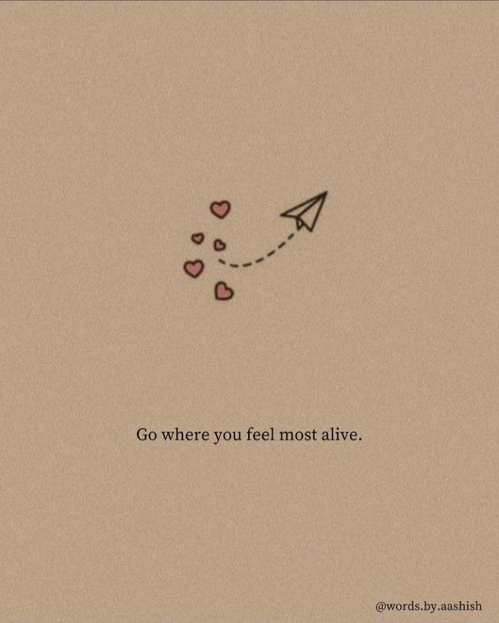
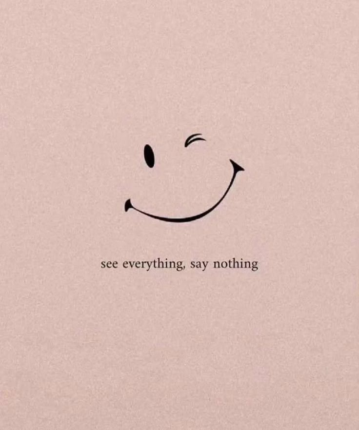
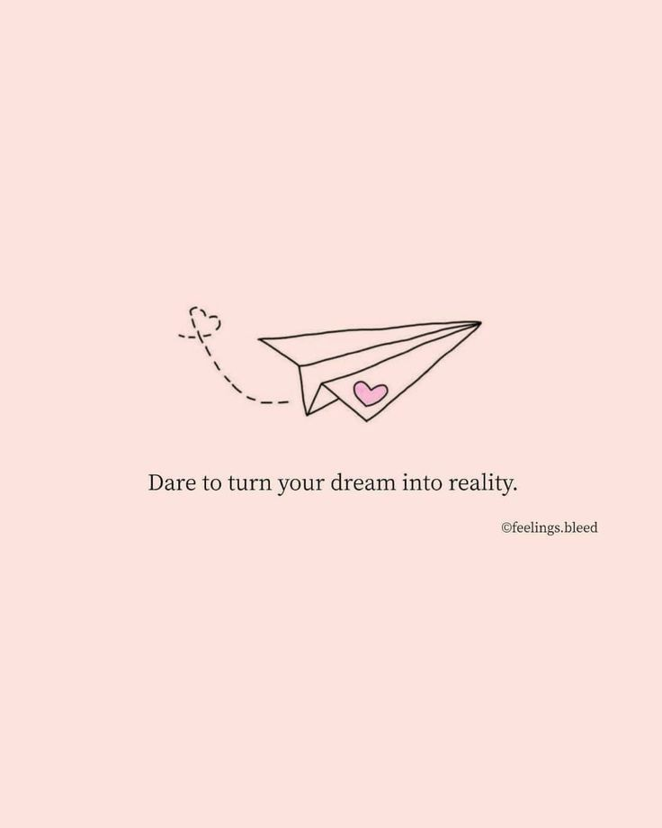

All Articles
The Future of Artificial Intelligence
Artificial Intelligence (AI) is no longer a futuristic concept; it is now part of our everyday lives. From voice assistants like Siri and Alexa to advanced systems that help doctors diagnose diseases, AI is transforming the way we work and live. Experts believe that AI will continue to evolve, making processes faster and more efficient. However, ethical concerns about privacy, jobs, and decision-making remain important topics of discussion. The future of AI lies in creating systems that are not only intelligent but also responsible and fair....
The Impact of Social Media on Society
Social media has revolutionized communication, enabling people from different parts of the world to stay connected. Platforms like Facebook, Instagram, and Twitter allow individuals to share experiences instantly. However, there are growing concerns about its negative effects, including addiction, misinformation, and its impact on mental health. Studies show that excessive use of social media can lead to anxiety and depression, especially among teenagers. Striking a balance between online and offline life is essential for a healthy society...

Climate Change and Our Responsibility
Climate change is one of the greatest challenges of our time. Rising global temperatures, melting ice caps, and extreme weather events are just a few consequences of human activity. Scientists emphasize the urgent need for reducing greenhouse gas emissions, using renewable energy, and protecting natural resources. Every individual can contribute by adopting eco-friendly practices, such as reducing waste, saving energy, and supporting sustainable products. Our collective responsibility is to preserve the planet for future generations....
The Benefits of Reading Books
Reading has always been one of the best ways to learn and grow. Books not only provide knowledge but also stimulate imagination and creativity. Research shows that regular reading improves vocabulary, memory, and critical thinking skills. Fiction books, in particular, help readers develop empathy by allowing them to experience different perspectives. In today’s fast-paced digital world, reading is also a way to relax and disconnect from screens. Making time to read daily can have lifelong benefits...

The Rise of Remote Work
The COVID-19 pandemic accelerated the global shift toward remote work. Companies discovered that many tasks could be performed effectively outside traditional offices. Remote work provides flexibility, reduces commuting time, and allows employees to maintain a better work-life balance. On the other hand, it also poses challenges such as isolation, lack of teamwork, and blurred boundaries between personal and professional life. The future of work will likely be hybrid, combining office and remote opportunities for the best outcomes....

The Importance of Mental Health Awareness
For many years, mental health was overlooked compared to physical health. Today, awareness campaigns are helping people understand that mental well-being is just as important. Conditions like depression, anxiety, and stress affect millions worldwide. Breaking the stigma surrounding mental health encourages individuals to seek help without fear or shame. Access to counseling, therapy, and supportive communities can make a significant difference. By promoting mental health awareness, societies can build stronger and healthier communities....